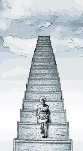

La discriminación por edad es tratar a alguien injustamente basándose en la edad de la persona. Si tratamos a una persona injustamente o de un modo menos favorable en comparación con otras personas, sobre la base de su edad, entonces estamos ejerciendo la discriminación por edad. Es, por tanto, una conducta injusta contra un grupo humano determinado. Por lo general se discrimina a ciertas minorías apoyándose en el escaso número de sus componentes, que no son admitidas en términos de igualdad, pero ¿cómo se puede seguir discriminando a un grupo de población tan numeroso como es el de las personas mayores?, y ¿qué pasará en Europa con indicadores de envejecimiento imparables dado el constante aumento en la esperanza de vida y el descenso en la natalidad? ¿Podremos seguir discriminando a una cuarta parte de la población europea? Discriminar, puede identificarse (referido a las personas mayores), con crueldad, indiferencia, frialdad, rechazo, falta de interés... es decir, una serie de conceptos negativos que atentan contra la dignidad de la persona. De hecho, el mayor temor que presentan las personas mayores no atiende tanto al hecho de envejecer como tal, sino más bien a la exclusión social, discriminación, maltrato y soledad profunda a la que se enfrentan.
Recordamos que el lema que adoptó la Organización de las Naciones Unidas con motivo del Año Internacional de las Personas de Edad en 1999, fue el de «Una sociedad para todas las edades». Por entonces, el secretario general de la ONU, Kofi Annan, a modo de prólogo de ese año, definía una sociedad para todas las edades como aquella que no caricaturiza a las personas mayores como pacientes o pensionados, sino como agentes y beneficiarios del desarrollo. Es decir, agentes activos y protagonistas de las relaciones sociales, de la sociedad y de su propia biografía. La discriminación por edad es la gran olvidada en la lucha por la igualdad y, sin embargo, la realidad de la discriminación por edad en España y en Europa reviste una especial gravedad por sus efectos y por su extensión, tal y como se desprende del Eurobarómetro especial sobre discriminación en la UE que señala la edad como la segunda causa de discriminación más fuerte a la que se enfrenta la sociedad europea, sólo superada por la discriminación por género que sufren habitualmente las mujeres, con especial relevancia las mujeres mayores.
La discriminación por edad es un mal en ascenso en nuestra sociedad. El extinto Ministerio de Igualdad señalaba que más del 40% de las personas mayores de 65 años sufrían discriminación por edad. En cierta medida ha calado en la sociedad la idea de que, al menos en teoría, no se puede ni debe discriminar a nadie por su sexo, orientación sexual, raza, ideología y religión; y, sin embargo, no ha calado de la misma manera la idea de que la edad es y puede ser un factor de discriminación igual de execrable que los factores mencionados. El principal obstáculo a la igualdad entre todas las edades es que esta discriminación no se reconoce entre los propios ciudadanos. Es un problema de convivencia generacional que impregna la vida cotidiana. Reconociendo la complejidad de la realidad social, una manera de entender la vida a partir de la propia experiencia es precisamente «esa experiencia», la que las generaciones actuales marginan no incorporándola tanto a la vida política como social y familiar. Porque envejecer no significa necesariamente que la persona se deslice inevitablemente hacia el deterioro físico y mental, hacia la soledad, hacia el abandono, hacia la no participación en la vida socio-política de la comunidad en la que vive.